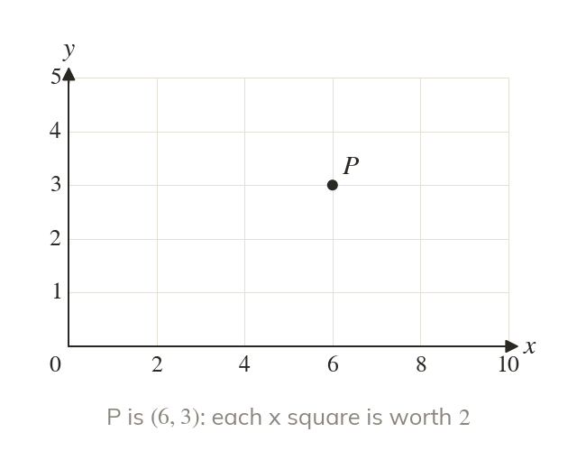
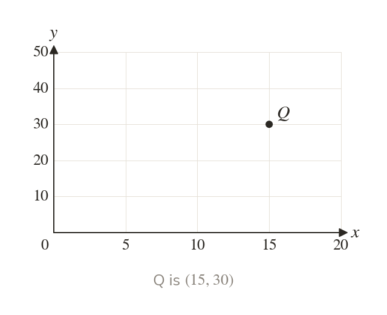
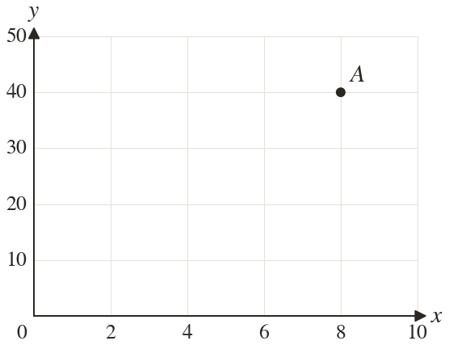
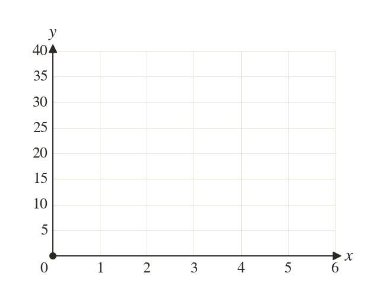
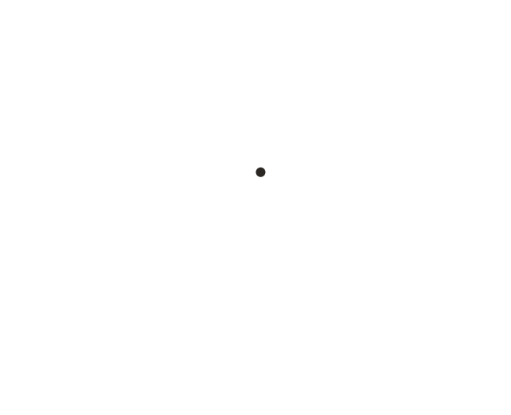
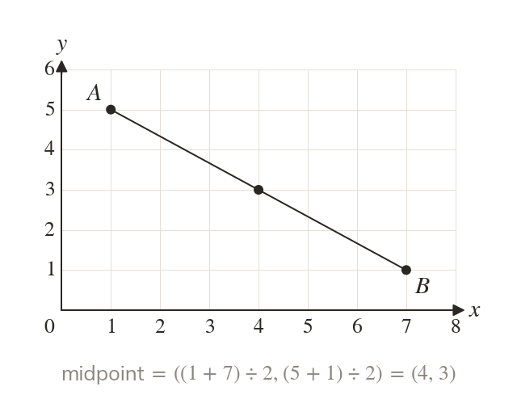
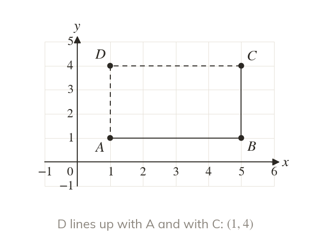

Read the scale first
Before plotting, read what one grid square is worth. Here each x-axis square is worth
Before plotting, the value of one grid square is read from the numbers on the axis. Here each square on the x-axis is worth
Real graphs rarely go up in ones: maps, charts and plans use scales. Today you read coordinates on any scale and use them to find midpoints and missing corners.
Work down the page at your own pace. Write every answer in your book first, then click to check it.
Read each card, then follow the worked examples one step at a time.

Before plotting, read what one grid square is worth. Here each x-axis square is worth

The two axes can carry different scales from each other. Each coordinate is read against its own axis.



Pick an answer. If it's wrong, the feedback tells you which mistake it was.
Printable worksheet — the questions with room to work.


Read each card, then follow the worked examples one step at a time.

The midpoint of a line segment is halfway between its endpoints in each direction. Each of its coordinates is the mean of the two endpoints' coordinates.

Find a missing vertex from the shape's properties. A rectangle's missing corner lines up with two of the others.
Pick an answer. If it's wrong, the feedback tells you which mistake it was.
Finished? Next lesson: 7.15.6 Factorising with a Common Factor.
Log in, then search for a code to practise that skill.
Videos, worksheets and more on each part of this lesson.